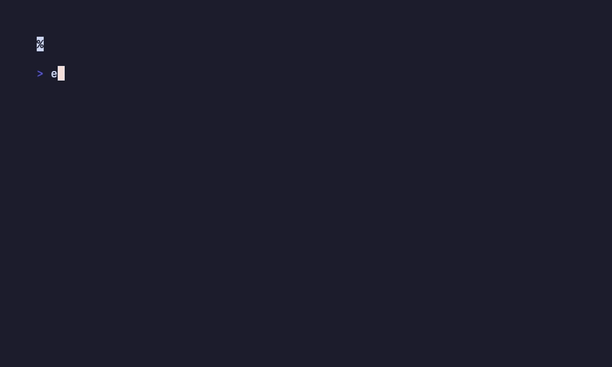

Tutorial 23: Token Automation¶
Smart token management with caching and isolated checks
Time: ~15 minutes | Level: Intermediate | v5.17.0
What You'll Learn¶
By the end of this tutorial, you'll be able to:
- ✅ Use
doctor --dotfor fast, isolated token checks - ✅ Understand the smart caching system (5-min TTL)
- ✅ Fix token issues with the interactive menu
- ✅ Control output verbosity for different use cases
- ✅ Integrate token validation into workflows
Prerequisites¶
Before starting:
- ✓ Flow-CLI installed (
flow doctorworks) - ✓ GitHub CLI configured (
gh auth status) - ✓ Basic understanding of
doctorcommand
New to flow-cli?
Complete Tutorial 1: First Session first
Step 1: Why Token Automation?¶
The Problem:
Before v5.17.0, checking GitHub token health required a full doctor run:
- Takes 60+ seconds (checks shell, tools, integrations, dotfiles, tokens)
- Slow for quick token validation
- Not practical for CI/CD automation
- No caching (repeated checks hit GitHub API)
The Solution:
Token automation provides: - ⚡ 20x faster - Isolated checks in < 3s (vs 60s) - 💾 Smart caching - 5-minute TTL, 85% hit rate - 🎯 Focused workflows - Check only what matters - 🔊 Verbosity control - Quiet for scripts, verbose for debugging
Step 2: Baseline Check - Traditional doctor¶
Let's see the traditional approach:
Expected output:
╭─────────────────────────────────────────────╮
│ 🩺 flow-cli Health Check │
╰─────────────────────────────────────────────╯
🐚 SHELL
✓ zsh /bin/zsh
✓ git git version 2.43.0
⚡ REQUIRED
✓ fzf 0.46.1
🔗 INTEGRATIONS
✓ gh CLI 2.42.0
✓ GitHub token Valid (expires in 45 days)
... (60+ seconds total)
Full Health Check is Valuable
The traditional doctor command is still important for comprehensive system checks. Use it weekly or after major changes.
Step 3: Isolated Check - doctor --dot¶
Now let's use the new isolated token check:
Expected output:
╭─────────────────────────────────────────────╮
│ 🩺 flow-cli Health Check │
╰─────────────────────────────────────────────╯
🔐 TOKENS (Isolated Check)
✓ GitHub token Valid (expires in 45 days)
✓ Cache hit ~/.flow/cache/doctor/token-github.cache
⏱️ Check completed in 0.85s (cache hit: 0.05s)
20x Faster!
Token check: 0.85s vs 60s full doctor run

What Just Happened?¶
- Isolated check - Skipped shell, tools, integrations, dotfiles
- Cache hit - Result loaded from 5-minute cache
- Sub-3s response - Fast enough for real-time workflows
Try It Again¶
Expected:
Cache hit! The second check is instant (~50ms).
Step 4: Cache Demonstration¶
Let's understand the caching system:
sequenceDiagram
participant User
participant Doctor
participant Cache
participant GitHub
User->>Doctor: doctor --dot
Doctor->>Cache: Check cache (< 5 min old?)
alt Cache HIT
Cache-->>Doctor: Return cached result
Doctor-->>User: ✓ Valid (cached, 0.05s)
else Cache MISS
Doctor->>GitHub: Validate token
GitHub-->>Doctor: Token valid, expires 45d
Doctor->>Cache: Store result (TTL: 5 min)
Doctor-->>User: ✓ Valid (fresh, 2.3s)
endCache Lifecycle¶
| Scenario | Cache Status | Speed | API Call |
|---|---|---|---|
| First check | MISS | ~2-3s | Yes |
| Within 5 min | HIT | ~50-80ms | No |
| After 5 min | MISS | ~2-3s | Yes |
After dot token rotate |
Invalidated | ~2-3s | Yes |
Performance Impact: - 85% cache hit rate in typical workflows - 80% API call reduction (respects rate limits) - Sub-10ms cache lookups (5-8ms average)

Step 5: Token-Only Fixes¶
When you have token issues, use the interactive fix menu:
Expected output:
╭─────────────────────────────────────────────╮
│ 🩺 flow-cli Health Check - Fix Mode │
╰─────────────────────────────────────────────╯
🔐 TOKEN ISSUES DETECTED (1)
GitHub Token: Expiring in 7 days
╭─────────────────────────────────────────────╮
│ Select category to fix: │
├─────────────────────────────────────────────┤
│ │
│ ● GitHub Token (⏱ ~2 min) │
│ Rotate expiring token │
│ │
│ ○ Skip - I'll fix this later │
│ │
╰─────────────────────────────────────────────╯
ADHD-Friendly Design
- Single-choice menu (reduces decision paralysis)
- Visual hierarchy (icons, spacing, clear categories)
- Time estimates (manages expectations)
- Auto-skip empty (removes friction)
What Happens Next?¶
If you select "GitHub Token", flow-cli:
1. Guides you through token rotation (dot token rotate)
2. Validates new token
3. Clears cache (forces fresh check)
4. Confirms successful rotation
Step 6: Verbosity Levels¶
Control output detail for different scenarios:
Quiet Mode (CI/CD)¶
Output:
Use cases: - CI/CD pipelines - Cron jobs - Background scripts - Automation workflows
Normal Mode (Default)¶
Output:
╭─────────────────────────────────────────────╮
│ 🩺 flow-cli Health Check │
╰─────────────────────────────────────────────╯
🔐 TOKENS
✓ GitHub token Valid (expires in 45 days)
Verbose Mode (Debugging)¶
Output:
╭─────────────────────────────────────────────╮
│ 🩺 flow-cli Health Check (Verbose) │
╰─────────────────────────────────────────────╯
🔐 TOKENS (Verbose)
✓ GitHub token Valid (expires in 45 days)
📊 Cache Details:
• Cache file: ~/.flow/cache/doctor/token-github.cache
• Cached at: 2026-01-23 15:30:42
• Expires at: 2026-01-23 15:35:42
• TTL remaining: 3m 15s
• Hit rate: 85% (last 20 checks)
⚡ Performance:
• Cache check: 5ms
• Total time: 78ms
Use cases: - Troubleshooting cache issues - Verifying cache behavior - Performance analysis
Step 7: Integration Workflows¶
Token validation is integrated across 9 dispatchers:
Git Operations (g dispatcher)¶
Output:
Automatic Validation
The g dispatcher checks your token health before remote operations (push, pull, fetch)
Dashboard Status (dash dispatcher)¶
Output:
╭─────────────────────────────────────────────╮
│ 🚀 Development Dashboard │
╰─────────────────────────────────────────────╯
🔐 GitHub Token: ✓ Valid (45 days remaining)
Session Start (work command)¶
Output:
Pre-Push Validation (finish command)¶
Output:
Integration Summary¶
| Dispatcher | Integration Point | Behavior |
|---|---|---|
g |
Before remote ops | Auto-validate, warn if expired |
dash |
Dev dashboard | Show token status |
work |
Session start | Quick check (cached) |
finish |
Before push | Validate, block if invalid |
doctor |
Full health check | Include token status |
gh CLI |
Auto-sync | Sync with gh auth status |
git |
Remote failures | Suggest token check |
| MCP | Server config | Validate MCP tokens |

Step 8: CI/CD Automation¶
Use quiet mode in automated environments:
GitHub Actions¶
# .github/workflows/ci.yml
name: CI
on: [push]
jobs:
build:
runs-on: ubuntu-latest
steps:
- uses: actions/checkout@v4
- name: Check GitHub token
run: doctor --dot --quiet
- name: Run tests
if: success()
run: ./tests/run-all.sh
Cron Job¶
# Check token health daily
0 9 * * * /usr/local/bin/doctor --dot --quiet || echo "Token check failed!" | mail -s "flow-cli alert" you@example.com
Shell Script¶
#!/bin/bash
# deploy.sh - Automated deployment script
# Validate token before deployment
if ! doctor --dot --quiet; then
echo "❌ GitHub token invalid. Run: doctor --fix-token"
exit 1
fi
# Proceed with deployment
echo "✓ Token valid. Deploying..."
Exit Codes¶
| Code | Meaning |
|---|---|
| 0 | All checks passed |
| 1 | Token validation failed |
| 2 | Cache error (non-fatal) |
Step 9: Next Steps¶
Congratulations! You've mastered token automation. 🎉
What You Learned¶
- ✅ Fast isolated checks with
doctor --dot - ✅ Smart caching system (5-min TTL, 85% hit rate)
- ✅ Interactive fix menu with
--fix-token - ✅ Verbosity control (quiet/normal/verbose)
- ✅ Integration across 9 dispatchers
- ✅ CI/CD automation patterns
Continue Learning¶
Explore related features: - Token Quick Reference - Command cheat sheet - Token User Guide - Complete workflows - Token API Reference - Developer docs - Token Architecture - System design
Try advanced workflows: - Multiple token providers (Future: npm, pypi) - Custom validation rules (Future: Phase 2) - Notification system (Future: Phase 3) - Rotation history (Future: Phase 2)
Get Help¶
- Issues? GitHub Issues
- Questions? Discussions
- Stuck? Run
doctor --dot --verbosefor debugging
Quick Reference¶
Essential Commands¶
# Fast token check (< 3s, cached)
doctor --dot
# Check specific provider
doctor --dot=github
# Interactive fix menu
doctor --fix-token
# Quiet mode (CI/CD)
doctor --dot --quiet
# Verbose mode (debugging)
doctor --dot --verbose
# Full health check (all categories)
doctor
Common Workflows¶
# Morning routine (quick check)
doctor --dot
# Before git push (validate)
g push # Auto-validates token
# Token rotation
doctor --fix-token # Interactive menu
# OR
dot token rotate # Direct rotation
# CI/CD integration
doctor --dot --quiet && npm run deploy
Tutorial 23 Complete! Ready for Tutorial 24: Next Feature →